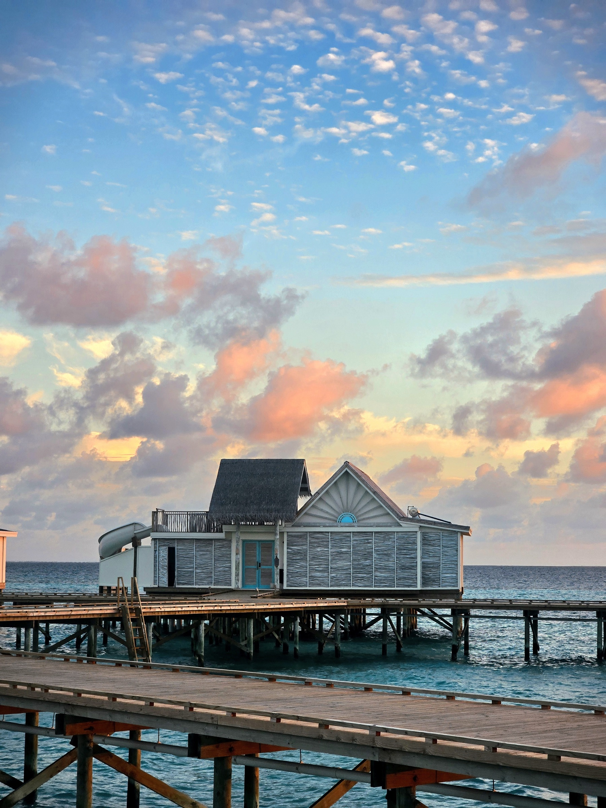
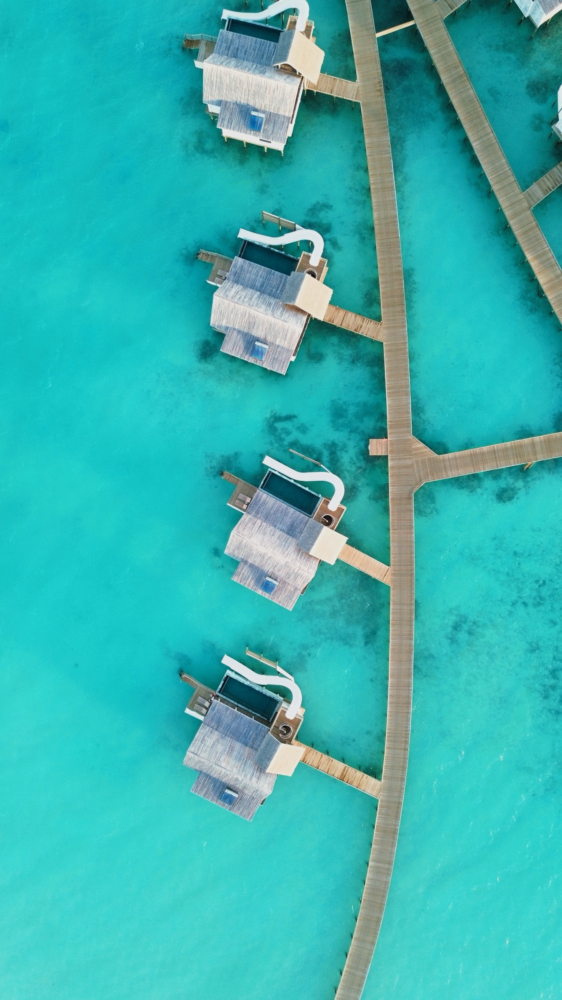
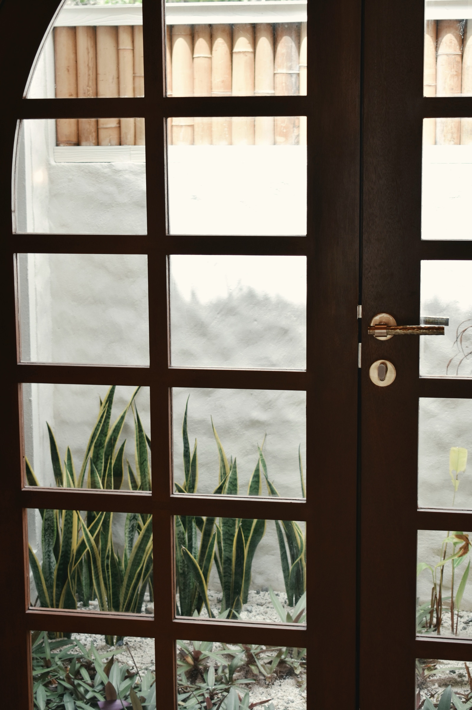
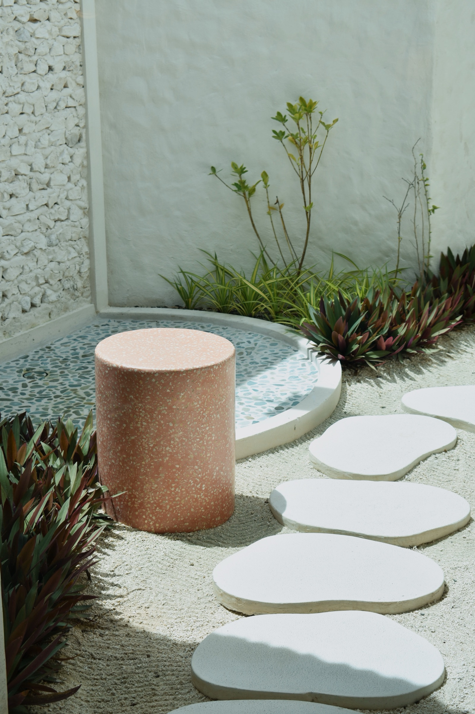

11 / Story, Not a Slideshow
One place.
Many moods.
A sequence that feels editorial: establish the destination, move closer, show the details, introduce people, then leave the viewer with a feeling.



